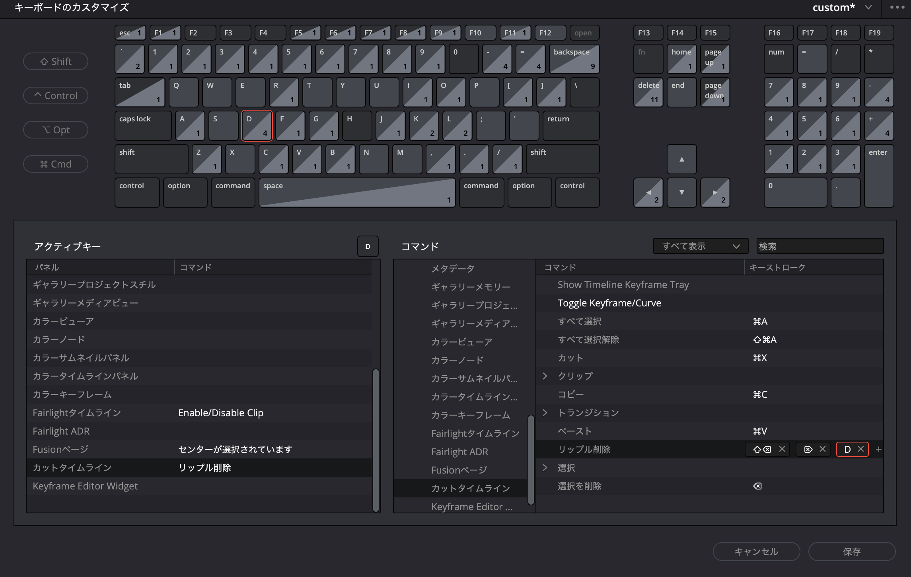
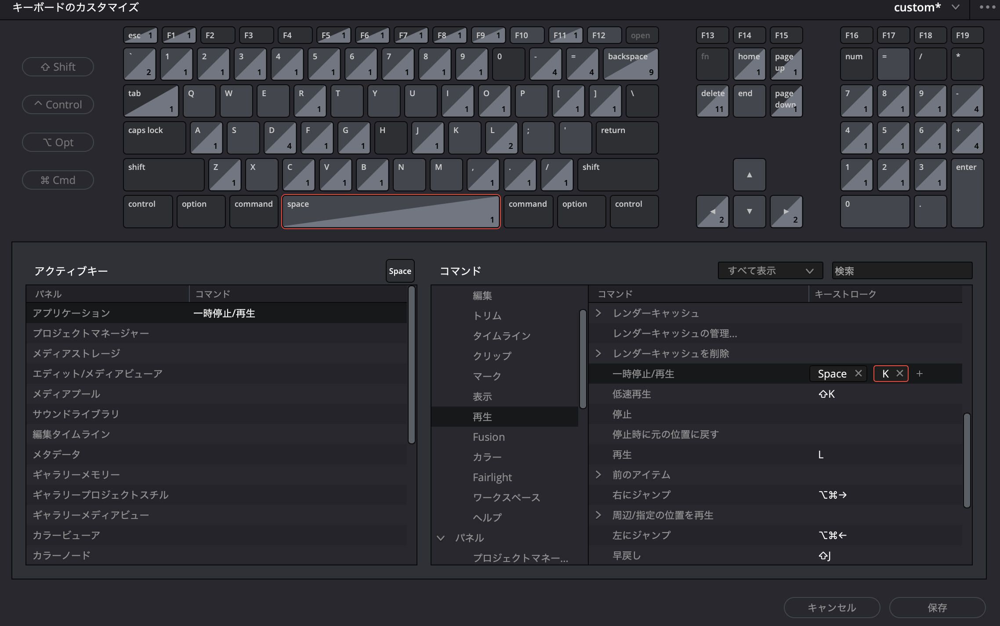

MacBook 初期セットアップ手順
動画編集作業用 MacBook のセットアップ手順です。
1. MacBook 初期設定
1-1. システム設定
- システム設定 > トラックパッド > タップでクリック：オン
- システム設定 > キーボード > 日本語入力の設定 > ライブ変換：オフ
1-2. マウス設定（LinearMouse）
動画編集はマウス操作が必須です。ワイヤレスマウスを貸し出します。
Mac のデフォルトではマウスのスクロールに加速度がかかり操作しにくいため、LinearMouse をインストールして加速度を無効化します。
インストール
- 公式サイトからダウンロード：https://linearmouse.app/
.dmg ファイルを開き、アプリケーションフォルダにドラッグ- 初回起動時にアクセシビリティの許可を求められるので許可する
- システム設定 > プライバシーとセキュリティ > アクセシビリティ > LinearMouse をオン
- LinearMouse を起動
設定（参考値）
以下はオーナーの設定値です。好みに応じて調整してください。
- ポインター
- ポインター加速を無効にする：オフ（デフォルトのまま）
- ポインターの加速：5（0-20）
- ポインターの速度：0.075（0-1）
- スクロール
- 逆スクロール：オフ
- スクロールモード：加速
- スクロールの加速：0.94（0-10、線形寄り）
- スクロールの速さ：62.85（0-128）
- 一般
1-3. Safari ブックマーク登録
以下をブックマークに追加しておく。
1-4. Google ドライブの設定
動画素材やスライド資料は Google ドライブで共有します。
- ブラウザ（Safari）で Google ドライブ にアクセス
- 指定の Google アカウントでログイン
- パソコン版 Google ドライブ をダウンロード・インストール
- インストール後、Google ドライブが Finder のサイドバーに表示されることを確認
- 共有フォルダ（
50_ITパスポート解説配信）にアクセスできることを確認
1-5. ヘッドホンの動作確認
動画編集では音声の確認が必要です。
- 有線ヘッドホンを接続
- システム設定 > サウンド > 出力 でヘッドホンが認識されていることを確認
- YouTube 等で音声が再生されることを確認
1-6. LINE のインストール
連絡用に LINE をインストールします。
- App Store を開き「LINE」を検索してインストール
- 自分のアカウントでログイン
1-7. ビデオ会議の練習
LINE 電話または Google Meet で確認
2. DaVinci Resolve Studio セットアップ
2-1. インストール
- 下記 URL からダウンロード
.dmg ファイルを開くInstall Resolve をダブルクリックしてインストーラーを実行- 画面の指示に従ってインストール
- インストール完了後、アプリケーションフォルダから DaVinci Resolve を起動
- ライセンスキーを入力してアクティベーション
2-2. 初回起動時の設定
- 初回起動時にクイックセットアップが表示される
- システムのクイックチェック：Continue
- プロジェクトの保存場所：デフォルトのまま
- 日本語 UI の確認
- DaVinci Resolve > Preferences > User > UI Settings
- Language：日本語（変更後、再起動が必要）
2-3. プロジェクト設定（推奨）
新規プロジェクト作成時に以下を設定：
- ファイル > プロジェクト設定（⇧ + 9）
- マスター設定
- タイムライン解像度：1920 x 1080（フル HD）
- タイムラインフレームレート：30
- 再生フレームレート：30
- 最適化メディアとレンダーキャッシュ
- 最適化メディアの解像度：Half（編集時の動作を軽くする）
- レンダーキャッシュ：Smart
2-4. メディアストレージの設定
- DaVinci Resolve > Preferences > System > Media Storage
- Google ドライブのプロジェクトフォルダを追加しておくと素材の読み込みが楽になる
2-5. ショートカットキーの設定


2-6. 書き出し（デリバー）のプリセット
YouTube 用の書き出し設定：
- デリバーページ
- フォーマット：MP4
- コーデック：H.264 または H.265
- 解像度：1920 x 1080
- フレームレート：30
- 品質：最高品質
3. トラブルシューティング
DaVinci Resolve が重い・カクカクする場合
- 再生 > プロキシモード > Half Resolution に変更
- タイムライン > 最適化メディアを生成 を実行
Google ドライブの同期が遅い場合
- 素材ファイルをローカル（デスクトップ等）にコピーしてから作業する
画面収録の許可が求められた場合
- システム設定 > プライバシーとセキュリティ > 画面収録 で DaVinci Resolve を許可